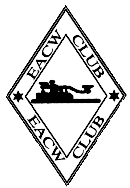

EACW:
EA CW Club
Telegrafiklubb som är mycket aktiv i Spanien och spansktalande länder.
Medlemsskapet är gratis och klubben är ganska aktiv på Internet.
Klubben grundades av EA4WH Jorge och EA4DXY Vicenta in september 2001.
För att gå med i klubben måste du tillhandahålla bevis för att du har kontaktat ett antal spanska stationer på telegrafi. Det är dock inte ett explicit krav att prata spanska, men om du vill bidra aktivt till klubblivet rekommenderas att du kan läsa spanska.
Sekreterare:
Vicenta Santos Ropero, EA4DXY
P. O. Box 45
E-13320 Villanueva de los Infantes, Ciudad Real
Ordföranden i EACW är:
Jorge Arcos Pavon, EA4WH
P. O. Box 45
E-13320 Villanueva de los Infantes, Ciudad Real
Konktatperson, webmaster och mailinglistadministrator är
Tony Herrera Caro, ea3re(at)yahoo.es
Travesera de Montigala , 48 4 A
E-08917 Badalona, Barcelona